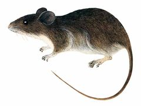

Oryzomys gorgasi
| Ratón de Los Olivitos | |
|---|---|
|  | |
| Riesgo de extinción | |
 En peligro (UICN) | |
| Clasificación científica | |
| Reino: | Animalia |
| Filo: | Chordata |
| Clase: | Mammalia |
| Orden: | Rodentia |
| Familia: | Cricetidae |
| Género: | Oryzomys |
| Especie: | Oryzomys gorgasi |
| Nombre binomial | |
|
Oryzomys gorgasi Hershkovitz, 1971 | |
| Distribución | |
 Mapa de distribución de Oryzomys gorgasi | |
Contenido
Información de Evaluación
- Categoría y Criterio Regional: En Peligro B1ab(iii)+2ab(iii)
- Fecha de Evaluación Regional:2015
- Evaluadores: Jesús Morales-Campos y Ariany García-Rawlins
- Categoría y Criterio Global: En Peligro B1ab(iii)
Justificación
Evaluaciones Previas
1999: No Evaluado (NE)
2008: En Peligro Crítico (CR)
Información General
Nombres comunes
Ratón de Los Olivitos, ratón arrocero del Atrato, ratón de Gorgas, Gorgas' rice rat, Gorgas' oryzomys.
Notas taxonómicas
Sinónimos
Descripción
Ratón de orejas pequeñas, con vibrisas mistaciales densas y recurbadas a lo largo de los márgenes orales. De cola marcadamente bicolor hacia la base, con pelos ventrales más largos que los dorsales y con un pincel de pelos terminales corto (ca. seis milímetros). Su pelaje dorsal es grisáceo y las patas traseras modificadas para la vida semiacuática. El análisis de sus contenidos estomacales indica que es una especie omnívora (Sánchez H. et al. 2001).
Distribución
La presencia de Oryzomys gorgasi en el golfo de Venezuela extiende su distribución conocida de 700 km al este-noreste de su localidad típica en Colombia (río Atrato), donde era conocida solo por el espécimen tipo descrito en 1971 (Hershkovitz 1971, Sánchez H. et al. 2001). La serie de Venezuela (11 individuos) fue colectada en el Refugio de Fauna Silvestre y Reserva de Pesca Ciénaga de Los Olivitos, específicamente en El Caimito, una pequeña isla costera separada de tierra firme por un canal estrecho de agua salobre cuyo ancho varía entre 50 y 100 m (Sánchez H. et al. 2001). Los hábitats predominantes en esta isla son bancos de arena con vegetación xerofítica (cactus, hierbas y arbustos espinosos), alrededor de una laguna fangosa bordeada por mangles (Rhizophora mangle) dispersos. A diferencia de otras especies de Oryzomys, que habitan en zonas húmedas y pantanosas, todos los especímenes se encontraron en sectores asociados con manglares y vegetación xerofítica (Sánchez H. et al. 2001), lo que podría implicar una presencia condicionada a la ausencia de la rata común (Rattus rattus) en esa localidad (ver más abajo). Existe una pequeña franja de manglares distribuida entre Maracaibo y El Moján (incluyendo El Gran Eneal y Sinamaica) que, aunque por su ubicación podría ser un área de potencial para su distribución, la fuerte influencia de las poblaciones humanas asentadas en la zona hace presumir que la presencia de la rata común impida la vida de poblaciones de O. gorgasi. De ser así, los hábitats idóneos para la O. gorgasi podrían abarcar menos de 200 km2.
- Sistema: Terrestre
- Bioregión:
- Intervalo altitudinal (m): Temporalmente sin Información
- Endémica: No
Situación
Es una especie escasa y su distribución en Venezuela es restringida, que solo se encuentra en una biorregión del país. Allí, se ha estimado que esté presente en una extensión de hasta 948,76 km2, y que ocupe un área de hasta 188,20 km2. A pesar de los esfuerzos realizados durante las últimas décadas, destinados al inventario de mamíferos en el norte de Venezuela (e.g. resultados del Smithsonian Venezuelan Project), Oryzomys gorgasi fue registrada por primera vez en 1992, gracias a las investigaciones realizadas por el entonces Ministerio del Ambiente y de los Recursos Naturales (Marnr), constituyendo su primer registro en el país (Handley Jr. 1976, Aguilera, M. et al. 1994, Sánchez H. et al. 2001). En otros inventarios producidos en sectores de tierra firme, adyacentes a El Caimito, la rata común (Rattus rattus, especie exótica) fue el único roedor hallado. Otro pequeño mamífero no volador nativo registrado en El Caimito es Marmosa robinsoni, mas no Rattus rattus. Asimismo, nuevos muestreos en los manglares costeros del sur de Los Olivitos solo han revelado la presencia de Rattus rattus y del rabipelado (Didelphis marsupialis). Estos resultados (Sánchez H. et al. 2001) y los presentados por otros investigadores (Voss y Weksler 2009) sugieren o confirman que la supervivencia de O. gorgasi está amenazada por la presencia de Rattus rattus y condicionó su extinción en la isla de Curazao, sin descartar el impacto que puedan tener los gatos domésticos (Felis silvestris catus), abundantes en los asentamientos humanos dentro de su área potencial de vida (J. Sánchez H. obs. pers.). Aun así, su distribución ecológica en Venezuela podría abarcar algunos hábitats de tierra firme donde todavía no ha sido registrada (Sánchez H. et al. 2001), pero la abundancia de Rattus rattus a lo largo del eje costero y sus humedales en Venezuela (J. Sánchez H. obs. pers.) hacen dudar razonablemente de la supervivencia de O. gorgasi. Estudios más detallados podrían determinar si su escasez aparente representa un factor crítico para su conservación (Sánchez H. et al. 2001). Se ha clasificado en la categoría En Peligro hasta que se compruebe su presencia en al menos una localidad más en nuestro país. En el ámbito global se considera En Peligro, pero no está incluida en el Libro rojo de los mamíferos de Colombia, aunque algunos especialistas del vecino territorio han propuesto calificarla en la categoría Vulnerable (Rodríguez, J. V. 1998, Rodríguez-Mahecha et al. 2006, IUCN 2014).
- EOO (km2): 948,76
- AOO (km2): 188,20
- Tendencia Poblacional: Decreciendo
Amenazas
Los datos disponibles señalan que la supervivencia de O. gorgasi está amenazada principalmente por la presencia de la rata común (Rattus rattus) en aquellos ambientes costeros donde ambas especies pueden coexistir. Otras causas podrían estar asociadas a la pérdida o la degradación de su hábitat, sobre todo en la depresión del lago de Maracaibo y zonas adyacentes, así como a la posible existencia de una población remanente, má o menos pequeña y sometida a condiciones de aislamiento.
Conservación
No se ha tomado medida alguna para la protección de la especie. La protección que pudiera brindar el refugio de fauna silvestre Ciénaga de Los Olivitos podría ser la única medida de conservación con la cual se cuente hasta ahora. Se propone realizar estudios sobre esta especie para ampliar los conocimientos en torno a su distribución y estatus poblacional. Además, es importante la aplicación de medidas para el manejo de sus hábitats, así como el cumplimiento de la normativa legal relacionada con la protección de los ecosistemas presentes en su área de distribución.
Autoría
Autores
José Ochoa-G. y Javier Sánchez-Hernández
Ilustrador
Víctor Pérez / Especie similar: Oryzomys albigularis (LC)
Referencias
- Aguilera, M., Pérez-Zapata, A., Martino, A., Barros, M. A. y Patton, Y. J. (1994). Karyosystematics of Aepeomys and Rhipidomys (Rodentia: Cricetidae). Acta Científica Venezolana 48: 247-248.
- Handley Jr., C. O. (1976). Mammals of the Smithsonian Venezuelan Project. Brigham Young University Science Bulletin, Biological Series 20(5): 1-89.
- Hershkovitz, P. (1971). A new rice rat of the Oryzomys palustris group (Cricetinae, Muridae) from northwestern Colombia, with remarks on distribution. Journal of Mammalogy 52: 700-709.
- IUCN (2014). The IUCN Red List of Threatened Species. Version 2014.3. Accesible en www.iucnredlist.org.
- Ochoa-G., J. y Sánchez-Hernández, J. (2015). Ratón de Los Olivitos, Oryzomys gorgasi. En: J.P. Rodríguez, A. García-Rawlins y F. Rojas-Suárez (eds.) Libro Rojo de la Fauna Venezolana. Cuarta edición. Provita y Fundación Empresas Polar, Caracas, Venezuela. Recuperado de: animalesamenazados.provita.org.ve/content/raton-de-los-olivitos
- Rodríguez, J. V. (1998). Listas preliminares de Mamíferos Colombianos con algún riesgo a la extinción. Informe Final presentado al Instituto de Investigación de Recursos Biológicos Alexander von Humboldt [en línea]. Disponible en www.humboldt.org.co, consultada el 23 de octubre de 2006.
- Rodríguez-Mahecha, J. V., Alberico, M., Trujillo, F. y Jorgenson, J. (Eds.) (2006). Libro Rojo de los Mamíferos de Colombia. Serie Libros Rojos de Especies Amenazadas de Colombia. Conservación Internacional, Ministerio del Ambiente, Vivienda y Desarrollo Territorial. Bogotá, Colombia. 433 pp.
- Rodríguez, J. P. y Rojas-Suárez, F. (1999). Libro Rojo de la Fauna Venezolana, segunda edición. PROVITA, Fundación Polar. Caracas. 444 pp.
- Rodríguez, J. P. y Rojas-Suárez, F. (Eds.) (2008). Libro Rojo de la Fauna Venezolana, tercera edición. Provita y Shell Venezuela, S. A. Caracas, Venezuela. 364 pp.
- Sánchez H., J., Ochoa-G., J. y Voss, R. S. (2001). Rediscovery of Oryzomys gorgasi (Rodentia: Muridae) with notes on taxonomy and natural history. Mammalia 65(2): 205-214.
- Voss, R. S. y Weksler, M. (2009). On the Taxonomic Status of Oryzomys curasoae McFarlane and Debrot, 2001, (Rodentia: Cricetidae: Sigmodontinae) with Remarks on the Phylogenetic Relationships of O. gorgasi Hershkovitz, 1971. Caribbean Journal of Science 45(1): 73-79.